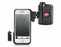

- KLYP手机壳使用于iphone5/5s- ML240 LED灯提供中性光线照明- 套件适合弱光环境下摄影和摄像
亮度可调，十分专业 配合iphone5s，完美
装逼神器，同时还很实用！
塑料感太强
平时喜欢用手机拍视频，这东西简直神器，提供持续的补光让画质瞬间提升。虽然5s闪灯很强了但是拍摄视频时有个闪光灯还是很好的。
持续补光，小巧便携，和手机完美贴合，在外拍摄还能装专业
要是有出球型云台就更好了
整台手机看上去专业了不少
补光效果无疑俾自带的要好,晚上户外人像或排队什么的很好用
一体化效果差一点